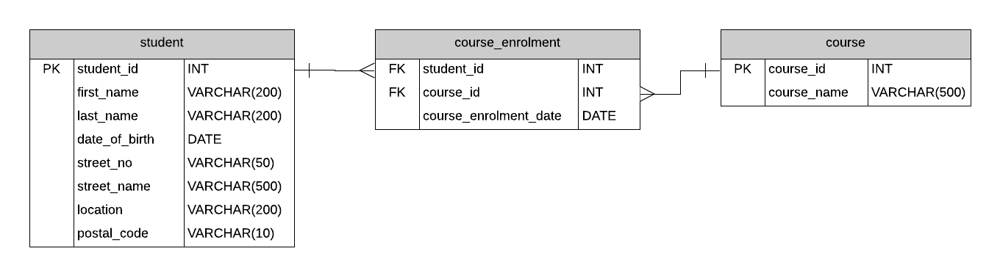

"A database is not just a collection of data, it's a collection of answers to questions that we haven't yet thought to ask" -Fred Brooks, former IBM Fellow
Data models are used to define and organize structured data and interfaces within a software system.
This can be in the context of:
In this section we will focus on the interface between a database and a software application.

Cardinality describes the relationship between entities.
| Cardinality | Description |
|---|---|
| 1:1 | One-to-one |
| 1:N | One-to-many |
| M:N | Many-to-many |
Crow's Foot Notation is a visual representation of cardinality.
Exercise:
Use Crow's Foot Notation to model some of the above relationships.
Shows:
Object-Relational Mapping (ORM) is a programming technique that converts data between incompatible type systems in object-oriented programming languages.
Most often used to map a relational database to an object-oriented programming language.
Typical case, retrieval:
Typical case, storage:
Simple one-to-one mapping for each field.
| Table.Field | Object.Attribute |
|---|---|
| Person.id | Person.id |
| Person.first_name | Person.first_name |
| Person.age | Person.age |
Each person can have multiple addresses; e.g. shipping, billing, home, work.
Person class has a dictionary of addresses - one per type.
Walkthrough:
Draw ERD and class diagram for the following entities.
| Table.Field | Object.Attribute |
|---|---|
| Person.id | Person.id |
| Person.first_name | Person.first_name |
| Person.age | Person.age |
| NA | Person.addresses |
| Table.Field | Object.Attribute |
|---|---|
| PersonAddress.id | PersonAddress.id |
| PersonAddress.type | PersonAddress.type |
| PersonAddress.person_id | NA |
| PersonAddress.address_id | NA |
| Table.Field | Object.Attribute |
|---|---|
| Address.id | Address.id |
| Address.street | Address.street |
| Address.city | Address.city |
| Address.zip | Address.zip |
Demo: